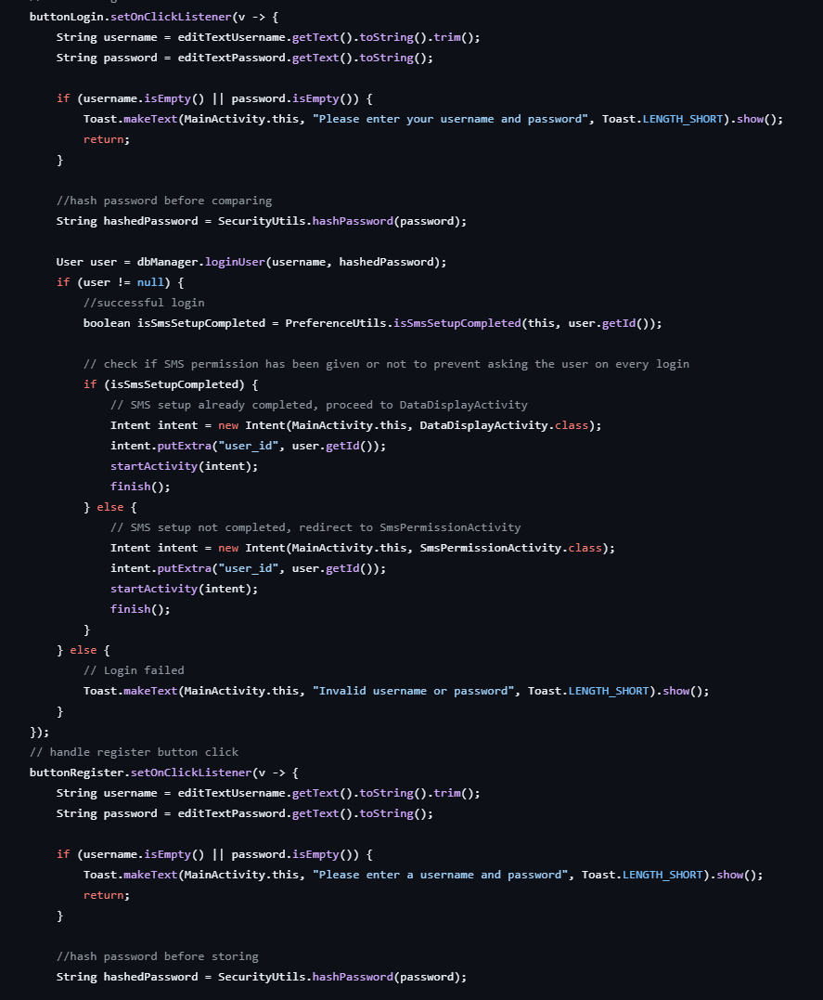
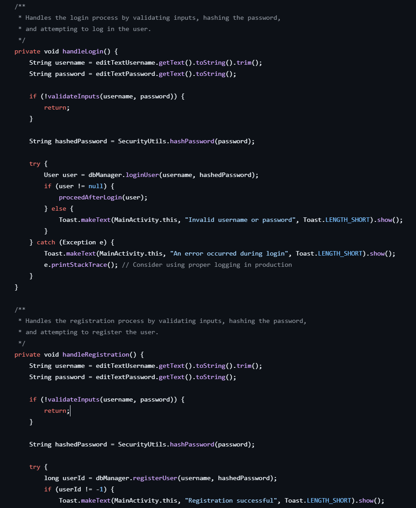
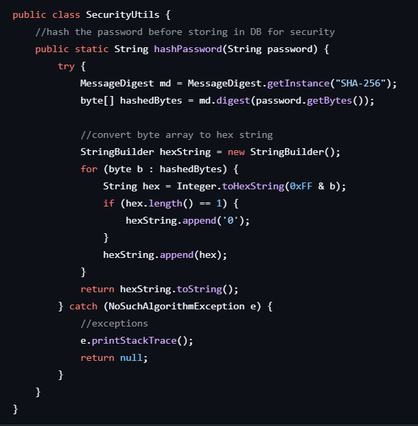
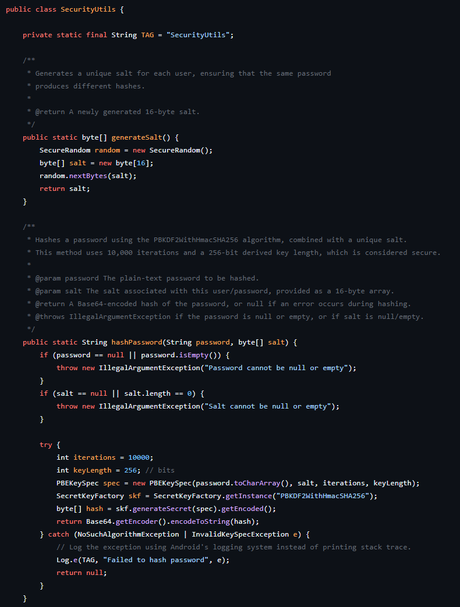

Professional Self-Assessment
Throughout my Computer Science degree program, I have advanced from learning fundamental principles to demonstrating professional-level competencies in software development. My journey involved not only understanding algorithms, data structures, and secure coding practices but also refining my ability to communicate technical concepts, collaborate effectively, and design user-focused experiences. The artifacts presented in this portfolio, alongside the enhancements I have implemented, are a testament to how my coursework, hands-on projects, and iterative refinement have prepared me to enter the field with confidence and versatility.
Completing my coursework and ultimately assembling this ePortfolio have helped me showcase a wide range of strengths. My experience in collaborative, team-based projects taught me the value of clearly defined roles, version control best practices, and empathetic communication. In earlier courses, working on group assignments pushed me to share responsibilities thoughtfully, negotiate implementation details among diverse skill sets, and maintain code integrity while merging changes—a skill set that is invaluable in any professional development team. These collaborations also reinforced my awareness of user and stakeholder perspectives, helping me adapt my explanations and documentation to different audiences, from non-technical clients to fellow engineers.
From a technical standpoint, delving into data structures and algorithms across multiple courses allowed me to approach problems systematically, choosing optimal solutions based on time and space complexities. This logical rigor is reflected in the artifacts I present. For instance, optimizing database queries or introducing caching mechanisms in DatabaseManager.java showed me how even small changes can yield substantial performance gains. Meanwhile, refining sorting strategies and insertion logic in DataDisplayActivity.java highlighted how algorithmic decisions directly affect the responsiveness and scalability of the application. The ability to think algorithmically is now ingrained in my approach, ensuring I can handle complex computational challenges efficiently.
The coursework also emphasized software engineering principles, database design, and secure coding practices. Enhancing DatabaseHelper.java and DatabaseManager.java helped me enforce data integrity, implement foreign keys with cascading rules, and create indexes that improve query execution times. I learned to adopt a security mindset by validating inputs, securing credentials, and replacing insecure debugging methods (like printStackTrace()) with structured logging. These measures aligned with industry standards and proved essential in building resilient, maintainable, and safe applications.
Furthermore, iterating on projects and performing my own code reviews allowed me to refine the user experience and code readability. Early on, I grappled with duplicated code, insufficient documentation, and ad hoc solutions. However, by reviewing and refactoring artifacts such as MainActivity.java and AddEntryDialog.java, I learned to break down complex logic into reusable methods, add meaningful comments, and handle exceptions gracefully. The process highlighted how a clear structure and consistent documentation can greatly improve maintainability, team onboarding, and long-term evolution of the codebase.
As I reflect on the artifacts I have chosen—ranging from MainActivity.java to DatabaseHelper.java, SmsPermissionActivity.java, DataDisplayActivity.java, DataAdapter.java, and WeightEntry.java—I see a cohesive narrative of growth. Initially, I focused on basic functionality and correctness, but over time, I introduced refinements that improved user experience, performance, and security. Together, these enhancements demonstrate a full spectrum of computer science abilities: setting up secure user authentication, optimizing database interactions, validating critical user inputs, efficiently managing data structures, and ensuring code quality through best practices. When viewed as a whole, these artifacts illustrate how I can handle the responsibilities of a professional software engineer, from back-end database logic and front-end user flows to system security and error handling.
In terms of course outcomes, the experiences of refining these artifacts have brought me full circle. Reflecting on my collaborations in earlier courses, I realize that I have already engaged in team environments, meeting Course Outcome 1 by employing strategies that foster effective communication and shared decision-making. Through consistent improvements to the code and documentation in MainActivity.java and DataDisplayActivity.java, I aligned with Course Outcome 2, producing professional-quality software that is maintainable and user-friendly. My careful consideration of algorithmic principles in optimizing sorting and insertion logic, along with database queries, addressed Course Outcome 3. By introducing caching, modern Java APIs, and secure coding practices, I demonstrated Course Outcome 4—using innovative techniques to deliver industry-standard solutions. Lastly, my emphasis on validating inputs, sanitizing data, and avoiding insecure logging met Course Outcome 5, revealing a persistent security mindset.
Throughout this journey, I learned that improvements in one area often require rethinking others. Strengthening exception handling in one file might uncover new issues in another. One notable challenge involved ensuring that the application prompted users for their goal weight after changes to the database schema. When setting goal_weight to NULL rather than -1, the logic had to be updated accordingly. I overcame this challenge through code reviews, debug statements, and iterative testing, reinforcing the importance of consistent logic and thorough testing after every change. While these debugging efforts sometimes introduced complexity, the gradual refinement paid off in a stable, polished application.
In essence, preparing and enhancing this portfolio allowed me to synthesize the full range of skills developed throughout my Computer Science program. I can now confidently claim mastery over collaborative team practices, articulate complex concepts to diverse stakeholders, implement robust data structures and algorithms, design and manage secure and efficient databases, and apply security principles consistently in my code. The artifacts I present serve as concrete evidence of these abilities. I am ready to bring these skills into the professional world, confident that the lessons learned and the outcomes achieved have set me apart as a capable and industry-ready computer scientist.
Code Review
Enhancements
Below you can see original vs. enhanced versions of key artifacts, along with descriptions and links to the full code.
MainActivity.java
Original Version
Original code had duplicated logic (input validation in Login and Register) and lacked exception handling.
Enhanced Version
Description of enhancements: refactored code, added exception handling, improved documentation.
SecurityUtils.java
Original Version
The original SecurityUtils.java code relied on a simple SHA-256 hashing method to secure passwords. While SHA-256 is a strong cryptographic hash function, using it directly for passwords is insufficient due to the lack of salt and iteration count. Without a salt, identical passwords produce identical hashes, making it easier for attackers to use precomputed tables (rainbow tables) to crack them. Additionally, the code used e.printStackTrace() for exception handling, which could reveal internal details of the application’s operation. No input validation checks were performed on the password, and there was minimal documentation, making the code less maintainable and not aligned with best security practices.
Enhanced Version
The updated SecurityUtils.java addresses these issues by implementing PBKDF2WithHmacSHA256 for hashing passwords, which includes using a unique salt for each user and multiple iterations to slow down brute-force attacks. This approach significantly improves security by preventing rainbow table attacks and ensuring that even if two users choose the same password, the resulting hashes differ. Input validation ensures that null or empty passwords are not processed. Instead of printing stack traces, the code now logs exceptions securely using Android’s logging system. Additionally, comprehensive method-level comments and clear documentation improve maintainability and clarity. In summary, the updated code follows industry-standard security measures, enhances error handling, and better supports long-term maintenance and scalability.